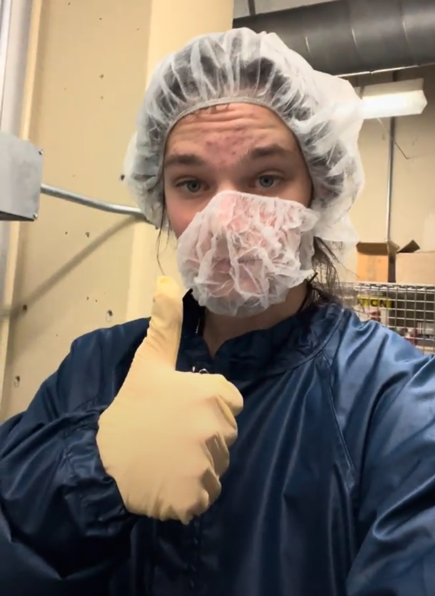

Objective
I am currently working under Dr. Nibir Dhar at the Virginia Microelectronics Center (VMC) on a research project aiming to develop a mid-wave infrared detector on a germanium substrate. This research is unique in its used of germanium wafers, as opposed to traditional silicon wafers. Our work seeks to massively reduce the required cost and cooling infrastructure to support existing mid-wave infrared cameras, and allow for room-temperature devices which require only minor cooling. This research project encompasses developing recipes for the passivation, etching, and metallization of Ge, as well as characterizing and running these processes using the equipment available in the lab. This includes electron-beam, PECVD, and ALD thin-film deposition, plasma etching, photolithography, and topological analysis. I am currently characterizing a pseudo-Bosch etching process in germanium to facilitate the fabrication of MOSFETs, as well as developing a dual-stack passivation recipe for effective device performance.
Background
Ge was used historically as a semiconductor in the first-ever transistors, including a number of consumer electronics. Silicon took over as the dominant substrate in large part due to how easy it was to work with compared to Ge. Silicon passively forms a cohesive passivation layer (SiO2) when in contact with oxygen while germanium does not. Additionally, silicon is much more abundant than Ge, has a higher melting point, and is far less expensive, making it a more common choice in manufacturing.
Lab Work
The work I am doing on this project is ongoing and intended to be published in the future, so for privacy and brevity this section will not go into specifics on the advancements from this project. Rather, the following sections will explain the skills I have learned and resources I have gained access to through this project that have helped to round out my abilities as an engineer.

Sinton WCT-120 Project
A major portion of my research involves developing new passivation recipes for protecting the device surface, as well as to ensure there is minimal leakage current or noise. This involves both deposition of these films through PECVD and Plasma-Enhanced Atomic Layer Deposition as well as characterization of their performance. At my lab, however, we did not possess a tool capable of performing the photoconductance decay measurements we required for investigating the passivation efficacy. Through connections I made through my research, I was able to secure $26,000 in funding for the lab to purchase a Sinton WCT-120 Lifetime Tester, which has proved vital to my ongoing research. I led the purchasing of the tool, including communicating with the tool vendor and submitting Sole Source documentation for procurement, and I was also responsible for assembling the tool. I created a workstation for the tool to be used and set up the supporting equipment, then I spent time learning how to use the tool. I confirmed the validity of the tool using a variety of reference wafers included with the shipment, and eventually the tool was released to our general users.

In addition to the procurement, installation, and validation of this tool, I also wrote an extensive standard operating procedure (included below in the files section) for the tool outlining its setup, use, troubleshooting, and constraints. Finally, I provided training sections to both staff and general users on the operation of the tool and walked them through the process of taking a measurement.

The tool has since operated with minimal maintenance required, and my research has been pushed forward tremendously by having this capability on-site. Additionally, it allowed me to interact with professionals in the microelectronics industry, engage in the process of procuring expensive infrastucture, and to better get to know the work being done by the post-doctoral students I trained. Ultimately I was extremely happy with the end result of this project and I was proud to have accomplished it successfully.
Fabrication Equipment Training

I've received training across a variety of fabrication equipment in our cleanroom, and I have hands-on experience in nearly every stage of the wafer production process.
One such process is photolithography, which I have successfully executed on dozens of wafers with a variety of patterns. I first use a Laurel spin-coater to spin on a photoresist, a normally-liquid polymer which can be exposed using light to create a patterned mask on the wafer surface. I have accomplished this using two different pieces of equipment at the VMC, one of which is the Karl Suss Mask Aligner, pictured above. This machine uses a high-powered UV bulb to expose the image using a mask onto the patterned wafer, capable of writing with an effective resolution near 1-µm.

The other tool I have used is the µMLA Maskless Aligner, which uses a piezo-driven laser to write individual lines onto the wafer. These lines can be as small as 500-nm and retain their resolution, which makes it an especially effective option for specialized devices, while the Karl Suss is used for repeatable designs. I am trained in the fabrication of both patterned masks for use on the Karl Suss, as well as creating design files for the µMLA.
After a pattern has been written onto the wafer, it is taken to the solvent bench to be developed. This results in the exposed resist being dissolved by the developer solution, creating a mask which only exposes the wafer in the pattern which was written on it. Certain photoresists can work in an opposite process where the exposed resist is left on the surface while the non-exposed resist is dissolved. To the right is a video of me running a development process for a mask I designed using KLayout.
The end result of this process is a patterned wafer which only exposes the necessary portions of the surface that are desired. This photoresist layer can be used as a sacrificial mask in an etching process, or be used as an under-layer to later allow lift-off to create microscopic floating structures.
We create these wafers often to test the function of our equipment as well as to provide training on this process to new users. As such, I am well-experienced in photolithography, and I feel confident using these tools in my own research.
Deposition and Metallization
We use a variety of techniques for depositing thin films and metal onto wafers. One such piece of equipment is the Samco PECVD (left), which the installation project for is ongoing. I have been trained as an operator on this tool however it has not yet been released to general users. This tool is used for rapidly depositing large amounts of material and I am actively using this tool in my research investigating passivation AJA Electron-Beam (right), which is used for vaporizing material and evaporating it onto the wafer surface. This creates a highly controllable and cohesive layer of material on the target, and it's preferable for metallization. I was trained on this tool and I've been heavily involved in repairing the cryo-valve, holder assembly, and pneumatic solenoids which form the tool.


Topological Analysis

I regularly use optical microscopes for investigating photolithography patterns and surface quality, however sometimes optical measurements are not sufficient for my work. To determine the surface profile of of the wafer, I typically use the Dektak 150 Profilometer for these measurements, which uses a microscopic probe to measure the elevation of the wafer surface.

For even smaller features or to image the cross-section of the wafer, I use the Hitachi TM3000 SEM. This tool is a scanning-electron-microscope designed for tabletop use, and is extremely effective in imaging features down to the nanometer scale. I have trained a number of users on the SEM specifically, as it is a popular tool within our cleanroom for analysis.
Etching

Etching can either be done as "wet-etching", which uses chemicals such as KOH to selectively dissolve materials to achieve the desired structures for your wafer. While I have training in this process, I typically utilize "dry-etching" using a Reactive Ion Etcher, the Oxford DRIE. This machine ignites a plasma to ionize various process gases, which are then biased toward the substrate and result in a chemical reaction at the surface which removes the material. The process I run for my research is known as a psuedo-Bosch process, which utilizes simultaneous etching and passivation steps to achieve extremely smooth and vertical sidewalls.
Files
VMC_SOP_Sinton_WCT-120-RJ.pdf